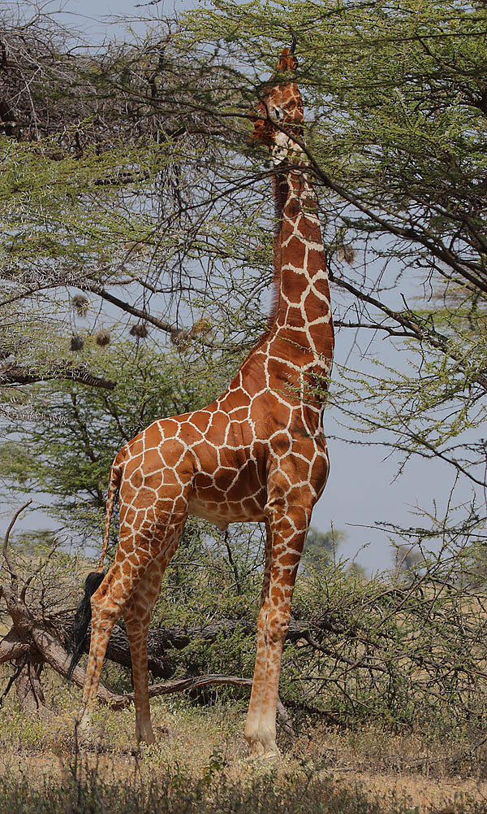

The name "giraffe" has its earliest known origins in the Arabic word zarāfah (زرافة), perhaps borrowed from the animal's Somali name geri. The Arab name is translated as "fast-walker". There were several Middle English spellings, such as jarraf, ziraph, and gerfauntz. The Italian form giraffa arose in the 1590s. The modern English form developed around 1600 from the French girafe. "Camelopard" is an archaic English name for the giraffe deriving from the Ancient Greek for camel and leopard, referring to its camel-like shape and its leopard-like colouring.
Giraffe dietGiraffe streatching his awesome neck
The giraffe has an extremely elongated neck, which can be up to 2–2.4 min length, accounting for much of the animal's vertical height.The long neck results from a disproportionate lengthening of the cervical vertebrae, not from the addition of more vertebrae. Each cervical vertebra is over 28 cm (11 in) long.They comprise 52–54 per cent of the length of the giraffe's vertebral column, compared with the 27–33 percent typical of similar large ungulates, including the giraffe's closest living relative, the okapi
Also a awesome feature regarding the neck is the giraffes fighting abilities
Living giraffes were originally classified as one species by Carl Linnaeus in 1758. He gave it the binomial name Cervus camelopardalis. Morten Thrane Brünnich classified the genus Giraffa in 1772. The species name camelopardalis is from Latin.